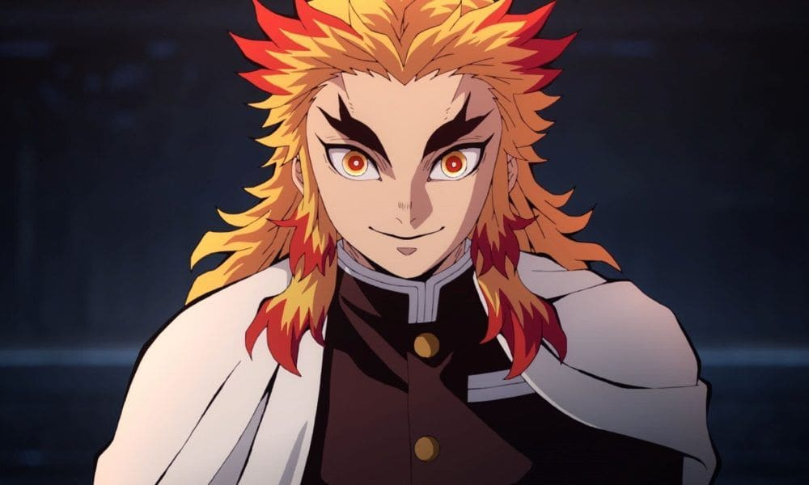
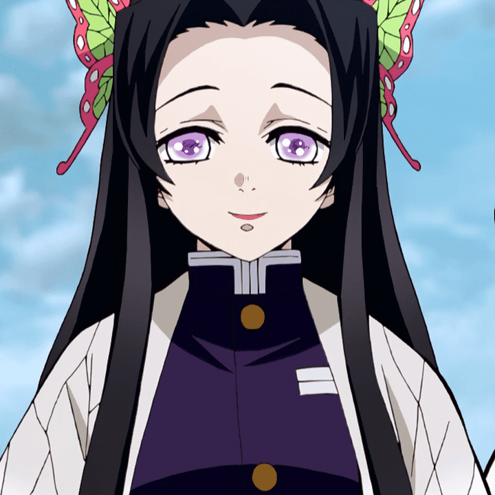
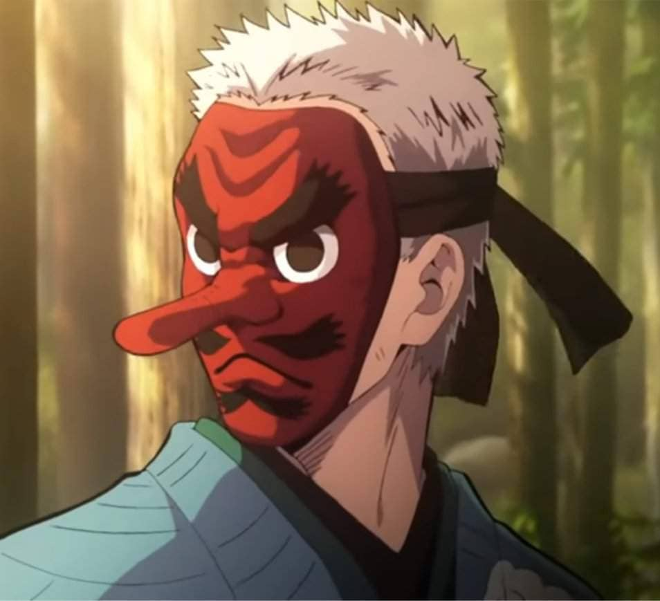
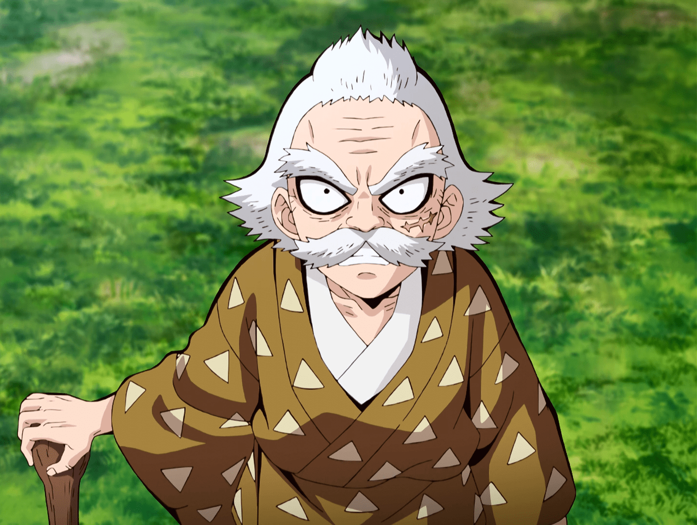

Ex pilares
-

Kyojuro Rengoku
Kyojuro Rengoku (煉れん獄ごく 杏きょう寿じゅ郎ろう, Rengoku Kyōjurō) fue un cazador de Demonios y el Pilar de la Llama (炎えん柱ばしら, En Bashira) del Cuerpo de Exterminio de Demonios.
-

Kanae Kocho
Kanae Kocho (胡こ蝶ちょう カナエ, Kochō Kanae) fue la hermana mayor de Shinobu Kocho, la cual fue asesinada años antes del comienzo de la historia. Ella era una Cazadora de Demonios, siendo un Pilar; en su caso, ella fue conocida como el Pilar de la Flor (花はな柱ばしら, Hana Bashira).
-

Sakonji Urokodaki
Sakonji Urokodaki (鱗 滝 左近次うろこだき さこんじ, Urokodaki Sakonji) es un cultivador de espadachines al servicio del Cuerpo de Exterminio de Demonios. Originalmente era un cazador de demonios, ocupando el puesto del Pilar del Agua.
-

Jigoro Kuwajima
Jigoro Kuwajima (桑くわ島じま慈じ悟ご郎ろう, Kuwajima Jigorō) fue el maestro de Zenitsu Agatsuma y Kaigaku. Era previamente el Pilar Rugiente (鳴なり柱ばしら Nari Bashira) en el Cuerpo de Exterminio de Demonios.